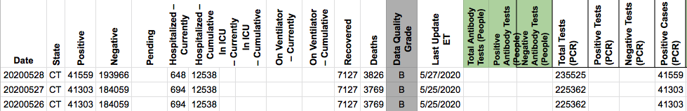
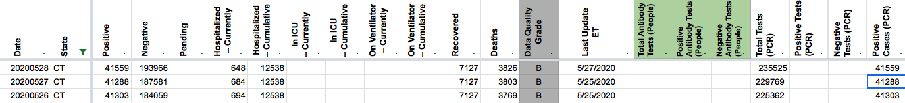

[CT Historicals] May 27th numbers
“Connecticut May 27 positive tests are 41,303 The COVID Tracking Project historical and current, but the Connecticut snapshot lists 41,288. Based on the snapshot it appears that Connecticut subtracted 15 positive tests.”
schmian added the label Historical Data on June 22, 2020 at 6:18 am
MattHilliard closed the issue on June 22, 2020 at 2:47 pm
CT actually subtracted a couple hundred positives and more total tests. The net change was -15. See CT’s note is here: https://portal.ct.gov/-/media/Coronavirus/CTDPHCOVID19summary5272020.pdf?la=en
Before: 
After: 
Added the following to CT’s public note:
On May 27, CT reported they had "removed 356 cases and 808 tests...which were identified as duplicates in the system." When combined with actual new cases, these removals resulted in a net reduction of 15 positives on 5/27.